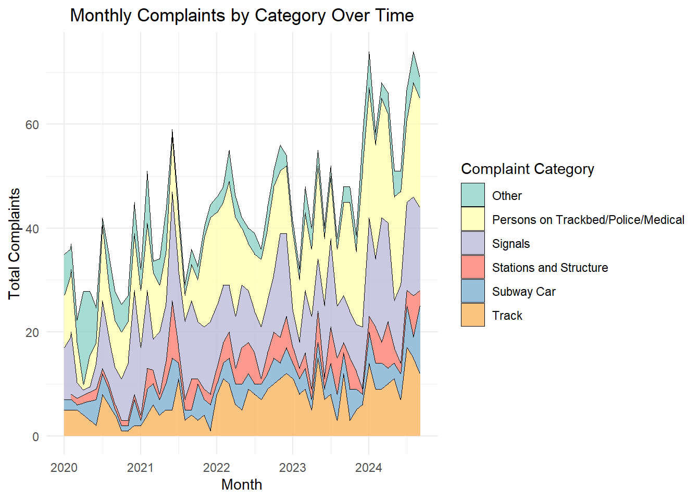

#Run and clean the datasif(!require("tidytext")) install.packages("tidytext")library(tidytext)if(!require("RColorBrewer")) install.packages("RColorBrewer")library(RColorBrewer)if(!require("lubridate")) install.packages("lubridate")library(lubridate)if(!require("stringr")) install.packages("stringr")library(stringr)if(!require("gt")) install.packages("gt")library(gt)if(!require("dplyr")) install.packages("dplyr")library(dplyr)if(!require("ggplot2")) install.packages("ggplot2")library(ggplot2)if(!require("tidyverse")) install.packages("tidyverse")library (tidyverse)if(!require("DT")) install.packages("DT")library(DT)mtaincident_file <-function(filepath) {as.data.frame(readr::read_csv(filepath, lazy =FALSE, show_col_types =FALSE))}path <-"C:\\Users\\w3038\\Downloads\\STA 9750\\Final Project\\MTA_Subway_Major_Incidents__Beginning_2020_20241026.csv"mtaincident <-mtaincident_file(path)# Clean the data by removing empty rows in 'line' columnmtaincident <- mtaincident %>%filter(line !="", line !="Systemwide") %>%mutate(division =case_when( division =="A DIVISION"~"Number Line", division =="B DIVISION"~"Letter Line",TRUE~ division # Retain other values ))# Optional: Check the first few rows of the cleaned datasethead(mtaincident)
month division line day_type category count
1 2024-09-01 Number Line 1 1 Stations and Structure 1
2 2024-09-01 Number Line 1 1 Track 2
3 2024-09-01 Number Line 1 1 Other 1
4 2024-09-01 Number Line 1 1 Signals 1
5 2024-09-01 Number Line 2 1 Track 2
6 2024-09-01 Number Line 2 1 Signals 1
Show the code
#Monthly Complaints by Category Over Time# First, convert the 'month' column to a Date format if not already donemtaincident$month <-as.Date(mtaincident$month, format ="%m/%d/%Y")# Aggregate the data to get total complaints by month and categorymonthly_category_complaints <- mtaincident %>%group_by(month, category) %>%summarise(total_complaints =sum(count)) %>%ungroup()# Plot the stacked area chartstacked_area_chart <-ggplot(monthly_category_complaints, aes(x = month, y = total_complaints, fill = category)) +geom_area(alpha =0.8, color ="black", size =0.2) +labs(title ="Monthly Complaints by Category Over Time",x ="Month",y ="Total Complaints",fill ="Complaint Category") +theme_minimal() +scale_fill_brewer(palette ="Set3") +# Choose a color palette for claritytheme(plot.title =element_text(hjust =0.5))# Display the plotstacked_area_chart

Show the code
# Load and clean MTA incident datamtaincident$month <-as.Date(mtaincident$month) # Ensure month column is in Date format# Filter data for COVID (2020-2021) and post-COVID (2022-2024) periodscovid_data <- mtaincident %>%filter(month >=as.Date("2020-01-01") & month <as.Date("2022-01-01"))post_covid_data <- mtaincident %>%filter(month >=as.Date("2022-01-01") & month <as.Date("2025-01-01"))# Calculate total incidents by line and division for COVID periodline_incident_covid <- covid_data %>%group_by(line, division) %>%summarise(total_incident =sum(count, na.rm =TRUE)) %>%arrange(desc(total_incident))# Calculate total incidents by line and division for post-COVID periodline_incident_post <- post_covid_data %>%group_by(line, division) %>%summarise(total_incident =sum(count, na.rm =TRUE)) %>%arrange(desc(total_incident))# Combine COVID and post-COVID datasets for mirrored plottingline_incidents_combined <-bind_rows( line_incident_covid %>%mutate(period ="COVID (2020-2021)"), line_incident_post %>%mutate(period ="Post-COVID (2022-2024)"))# Separate data by divisionnumber_line_data <- line_incidents_combined %>%filter(division =="Number Line")letter_line_data <- line_incidents_combined %>%filter(division =="Letter Line")# Create mirrored chart for Number Linenumber_line_graph <-ggplot(number_line_data, aes(x =reorder(line, total_incident), y =ifelse(period =="COVID (2020-2021)", -total_incident, total_incident), fill = period)) +geom_bar(stat ="identity", position ="identity") +geom_text(aes(label =abs(total_incident)), position =position_stack(vjust =0.5), color ="black", size =3.5) +# Display total incidents as textscale_y_continuous(labels = abs) +# Show absolute values on y-axislabs(title ="Total Incidents by Number Line (COVID vs. Post-COVID)",x ="Subway Line",y ="Total Incidents") +theme_minimal() +coord_flip() +theme(plot.title =element_text(hjust =0.5)) +scale_fill_manual(values =c("lightblue", "lightgreen"))# Create mirrored chart for Letter Lineletter_line_graph <-ggplot(letter_line_data, aes(x =reorder(line, total_incident), y =ifelse(period =="COVID (2020-2021)", -total_incident, total_incident), fill = period)) +geom_bar(stat ="identity", position ="identity") +geom_text(aes(label =abs(total_incident)), position =position_stack(vjust =0.5), color ="black", size =3.5) +# Display total incidents as textscale_y_continuous(labels = abs) +# Show absolute values on y-axislabs(title ="Total Incidents by Letter Line (COVID vs. Post-COVID)",x ="Subway Line",y ="Total Incidents") +theme_minimal() +coord_flip() +theme(plot.title =element_text(hjust =0.5)) +scale_fill_manual(values =c("lightblue", "lightgreen"))# Display the plotsprint(number_line_graph)
Show the code
print(letter_line_graph)
Show the code
library(scales)# Calculate total incidents for each category during the COVID period (2020-2021)covid_incident_reasons <- mtaincident %>%filter(month >=as.Date("2020-01-01") & month <as.Date("2022-01-01")) %>%group_by(category) %>%summarise(total_incidents =sum(count, na.rm =TRUE)) %>%mutate(percentage = total_incidents /sum(total_incidents) *100)# Plot pie chart for COVID periodcovid_pie <-ggplot(covid_incident_reasons, aes(x ="", y = total_incidents, fill = category)) +geom_bar(stat ="identity", width =1) +coord_polar("y", start =0) +geom_text(aes(label =paste0(round(percentage, 1), "%")), position =position_stack(vjust =0.5), color ="white") +labs(title ="Incident Reasons During COVID Period (2020-2021)", fill ="Incident Category") +theme_void() +theme(plot.title =element_text(hjust =0.5))# Display COVID pie chartprint(covid_pie)
Show the code
# Calculate total incidents for each category during the post-COVID period (2022-2024)post_covid_incident_reasons <- mtaincident %>%filter(month >=as.Date("2022-01-01") & month <as.Date("2025-01-01")) %>%group_by(category) %>%summarise(total_incidents =sum(count, na.rm =TRUE)) %>%mutate(percentage = total_incidents /sum(total_incidents) *100)# Plot pie chart for post-COVID periodpost_covid_pie <-ggplot(post_covid_incident_reasons, aes(x ="", y = total_incidents, fill = category)) +geom_bar(stat ="identity", width =1) +coord_polar("y", start =0) +geom_text(aes(label =paste0(round(percentage, 1), "%")), position =position_stack(vjust =0.5), color ="white") +labs(title ="Incident Reasons Post-COVID Period (2022-2024)", fill ="Incident Category") +theme_void() +theme(plot.title =element_text(hjust =0.5))# Display post-COVID pie chartprint(post_covid_pie)
Show the code
# Create borough mapping based on your updated listborough_data <-data.frame(line =c("1", "1", "2", "2", "3", "3", "4", "4", "4", "5", "5", "6", "6", "7", "7", "A", "A", "B", "B", "B", "C", "C", "D", "D", "D", "E", "E", "F", "F", "F", "G", "G", "J", "J", "Z", "Z", "L", "L", "N", "N", "N", "Q", "Q", "R", "R", "R", "S Rock", "S Fkln", "S 42nd"),borough =c("Manhattan", "Bronx", "Brooklyn", "Manhattan", "Brooklyn", "Manhattan", "Manhattan", "Brooklyn", "Bronx", "Brooklyn", "Manhattan", "Manhattan", "Bronx", "Manhattan", "Queens", "Manhattan", "Brooklyn", "Brooklyn", "Bronx", "Manhattan", "Manhattan", "Brooklyn", "Brooklyn", "Manhattan", "Bronx", "Queens", "Manhattan", "Manhattan","Queens", "Brooklyn", "Queens", "Brooklyn", "Manhattan", "Queens", "Manhattan", "Queens", "Manhattan", "Brooklyn", "Queens", "Manhattan", "Brooklyn", "Manhattan", "Brooklyn", "Queens", "Manhattan", "Brooklyn", "Manhattan", "Brooklyn", "Manhattan"))# Define line groups for pre-COVID and post-COVIDpre_covid_lines <-c("6", "7", "E", "F", "N")post_covid_lines <-c("2", "6", "E", "F", "N")# Filter the borough data for pre-COVID linespre_covid_boroughs <- borough_data %>%filter(line %in% pre_covid_lines)# Filter the borough data for post-COVID linespost_covid_boroughs <- borough_data %>%filter(line %in% post_covid_lines)# Count occurrences of each borough across the pre-COVID linespre_covid_borough_counts <- pre_covid_boroughs %>%group_by(borough) %>%summarise(count =n()) %>%arrange(desc(count))# Count occurrences of each borough across the post-COVID linespost_covid_borough_counts <- post_covid_boroughs %>%group_by(borough) %>%summarise(count =n()) %>%arrange(desc(count))# Create a gt table for pre-COVID borough countspre_covid_table <- pre_covid_borough_counts %>%gt() %>%tab_header(title ="Frequency of Boroughs for Pre-COVID Subway Lines") %>%cols_label(borough ="Borough", count ="Incident Count") %>%fmt_number(columns =vars(count), decimals =0) %>%tab_options(table.width =pct(100))# Create a gt table for post-COVID borough countspost_covid_table <- post_covid_borough_counts %>%gt() %>%tab_header(title ="Frequency of Boroughs for Post-COVID Subway Lines") %>%cols_label(borough ="Borough", count ="Incident Count") %>%fmt_number(columns =vars(count), decimals =0) %>%tab_options(table.width =pct(100))# Display the gt tablespre_covid_table